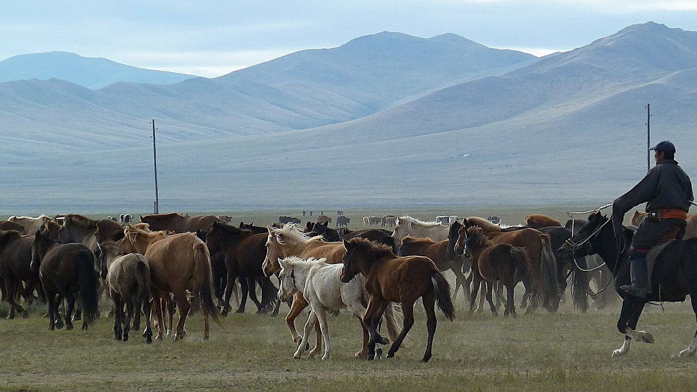

Race, Mongolian Steppe

Behind
Best +0:01
371W
Target 418 W-47 W
- Cadence
- 87rpm
- Heart
- 140bpm
- Speed
- 26.5km/h
Recover13 of 18
2:27
Next: · 3:00 at level 24
-1.7%
86 m climbed
13.42 km
10
Resistance / 32
Solo races your best-time ghost: position reads Ahead or Behind, and solo alone gets a Pause button. Frozen at 31:33.